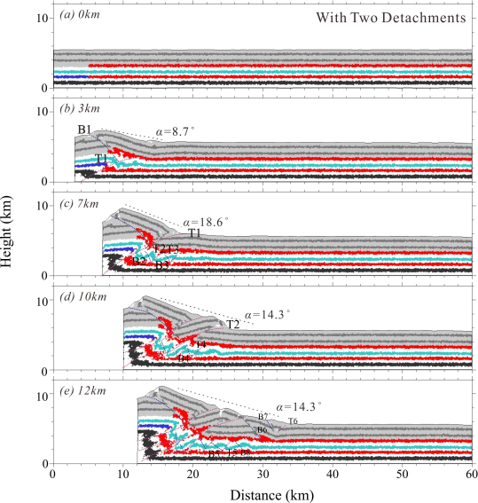
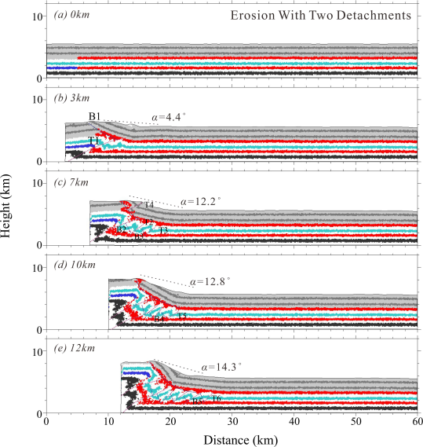
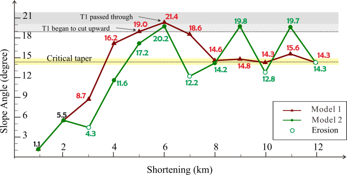

Title
Structural features and evolution of the northwestern Sichuan Basin Insights from discrete numerical simulations
Authors
Wenqiao Xu1, Hongwei Yin1*, Dong Jia1, Changsheng Li2, Wei Wang1, Gengxiong Yang1, Wanhui He1, Zhuxin Chen3 and Rong Ren3
- School of Earth Science and Engineering, Nanjing University, Nanjing, China
- School of Earth Science, East China University of Technology, Nanchang, China
- Research Institute of Petroleum Exploration and Development, Beijing, China
Abstract
The northwestern Sichuan Basin has experienced Meso-Cenozoic intracontinental compressional tectonic processes and formed multi-detachment stratigraphic distribution of foreland basins and fold-thrust belts, which have caused complicated structural deformations in the deep buried layers. Rapid uplift with accelerated erosion and two sets of detachments in the Lower Triassic and Lower Cambrian controlled the multilevel deformation structure. We conducted discrete numerical simulations with double weak detachments and erosion under extrusion conditions in order to examine the mechanics and kinematics of the frontal piedmont zones of the NW Sichuan Basin. The following findings were made. (1) With continuous compression, the weak detachments promoted the decoupled and ladder-like deformation of the thrust belt, where the deformation above the slip layer extended further than it did below it. Rapid uplift and erosion at the thrust front contributed to the formation of a passive roof fault and a monocline in the upper layer, a series of forward and backward thin-skinned thrust-buried structures in the middle layer sandwiched between two weak detachments and stacking structures in the lower layer. (2) Erosion effectively prevents the deformation from propagating above the upper detachment, but can advance a horizontal transition in the deformation style generated within the middle brittle layer: from oblique and tight fault propagation folds to symmetrical, wide, and gentle detachment folds. (3) The model results consistent with tectonic deformation in the NW Sichuan Basin indicate a possible evolutionary mechanism under compression. There is hierarchical deformation of uncoordinated contraction controlled by the Lower Triassic and Early Cambrian weak layers, with the characteristics of the shallow monocline, the middle thin-skinned thrusts, and the deeper basement-involved folds. Continuous compression contributed a sequential pattern of steps as a whole, from the frontal piedmont zones to the foreland basin, autochthonous stacking thrusts, and the huge buried structure in the NW Sichuan Basin. During the Himalayan period, syntectonic erosion along with the uplifted thrust front maintained the development of a passive-roof duplex and a huge forward buried structure.

Modeled progress with two detachments due to the left-wall displacement

Modeled progress with two detachments and erosions due to the left-wall displacement
